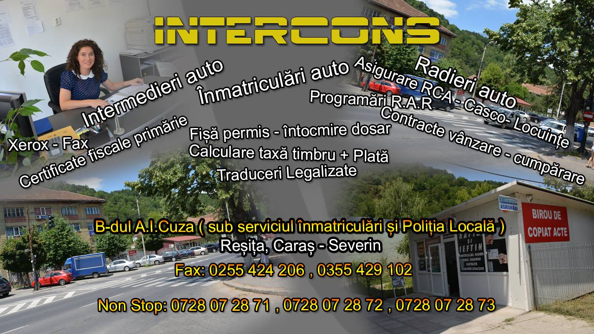

INTERCONS
- Înmatriculări auto Reșița
Servicii
Contact

INTERCONS Reșița vă oferă servicii de:
Înmatriculări auto
Intermedieri auto
Radieri
Programări RAR
Dosar pentru Permis Auto
Xerox fax
Asigurare RCA - CASCO - Locuințe
Traduceri Legalizate
Telefon:
0728.072.871
0728.072.872
0728.072.873
Fax: 0255.424.206 0355.429.102 Facebook:
Intercons
Ne găsești de Luni până Vineri în curtea clădirii Serviciului Înmatriculări și a Poliției Locale Reșița
Coordonate GPS:
45.300960, 21.876823